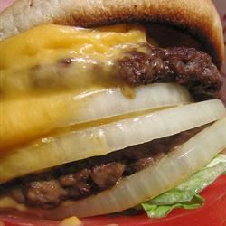

Cheeseburger

Description
Great recipe for a double cheeseburger.
Ingredients
- 1 hamburger bun, split
- ⅓ pound ground beef
- 1 pinch salt
- 4 processed cheese singles (such as Kraft®)
- 1 tablespoon thousand island salad dressing (such as Kraft®)
- 1 slice tomato
- 1 leaf lettuce
- 1 slice onion
Steps
- Preheat a skillet over medium heat. Lightly toast both halves of the
hamburger bun, cut sides down, 2 to 3 minutes. Set aside.
- Separate beef into 2 portions and form each into a thin patty slightly
larger than the bun. Lightly salt each patty and cook on one side for
2 to 3 minutes. Flip patties over and immediately place two slices of
American cheese on each one. Cook until meat has reached desired doneness,
2 to 3 minutes more. An instant-read thermometer inserted into the center
should read at least 160 degrees F (70 degrees C).
- Assemble the double cheeseburger in the following order: bottom bun,
dressing, tomato, lettuce, beef patty with cheese, onion, beef patty
with cheese, and top bun.